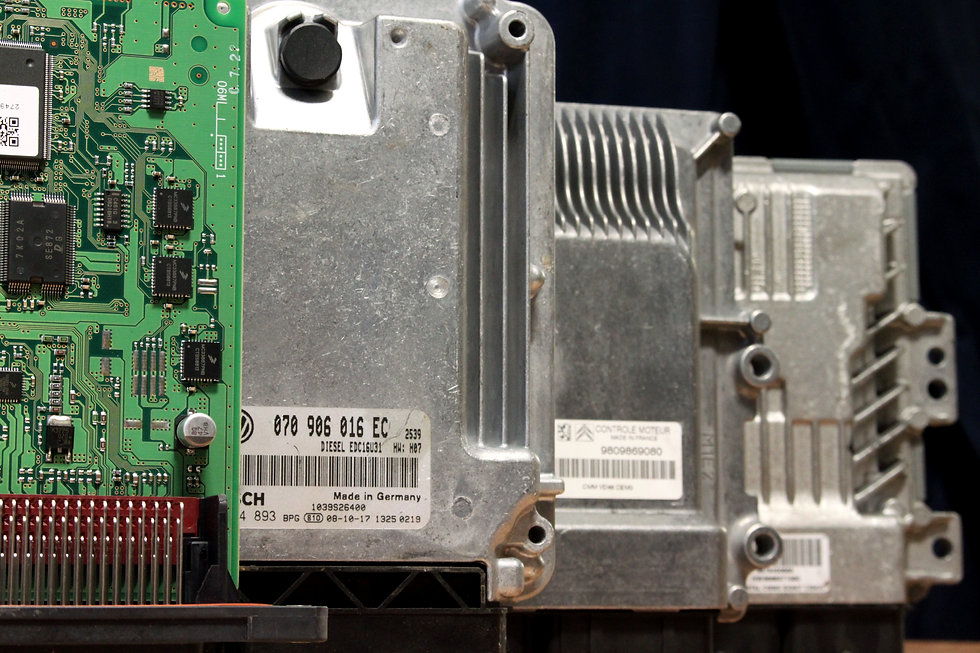
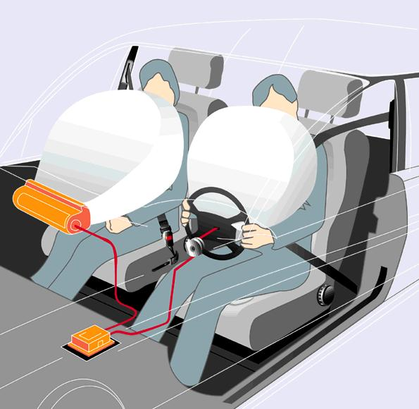
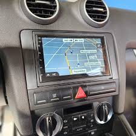
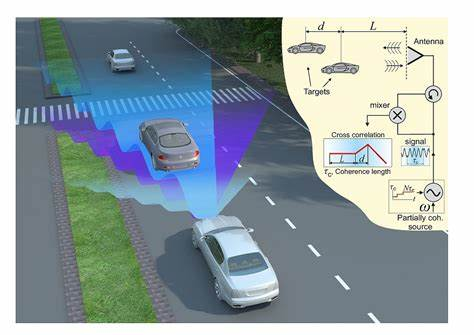

Tecnología que impulsa la movilidad y la seguridad
Los microprocesadores son esenciales en los vehículos modernos. Permiten el control preciso del motor, la gestión de sistemas de seguridad, la automatización de funciones y la conectividad inteligente, haciendo los autos más seguros, eficientes y cómodos.

Gestiona el motor, la inyección y el encendido para máxima eficiencia.

ABS, airbags y asistencia a la conducción protegen a los ocupantes.

GPS, multimedia y conectividad mejoran la experiencia de viaje.

Sensores, cámaras y radares permiten conducción asistida y autónoma.
Los microprocesadores están presentes en todos los autos modernos. Permiten la gestión inteligente del vehículo, la seguridad activa y la conectividad.
La tendencia es hacia autos cada vez más autónomos, conectados y eficientes.
¡La tecnología automotriz sigue revolucionando la movilidad!